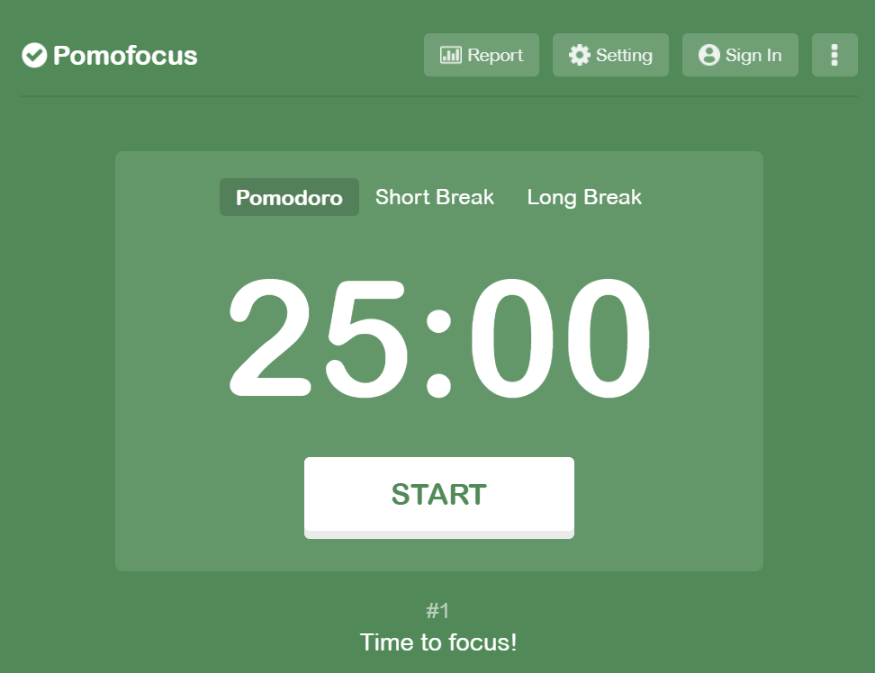

Pomodoro Timer First Brainstorm
Brainstorming Ideas
Date: 4.9.2025
Team Members:
- ChenCheng Li
- Ryan Garcia
- Kate Stadler
- Nick Nguyen
Agenda:
Unfinished stuff from last meeting
Agreed on the genearal UI, refer to image above
New stuff that need to be talked about
Diving works:
- Ryan: Frontend
- Kate: Backend
- Nick: Testing
- ChenCheng: Documentation
Comments
Ryan: We need to make sure that the timer is accurate and the UI is user-friendly.
Kate: We should consider adding a feature to allow user to specify tasks they are working on.
What is a pomodoro timer
A Pomodoro timer is a time management tool that uses a timer to break work into intervals, traditionally 25 minutes in length, separated by short breaks. The technique is based on the idea that the timer creates a sense of urgency, which can help improve focus and productivity. After four pomodoros, a longer break is taken. The name "Pomodoro" comes from the Italian word for tomato, as the original timer used by Francesco Cirillo, the creator of the technique, was shaped like a tomato. The Pomodoro Technique is widely used by students and professionals to manage their time and increase productivity.
Meeting recording
is available for review.
Meeting audio